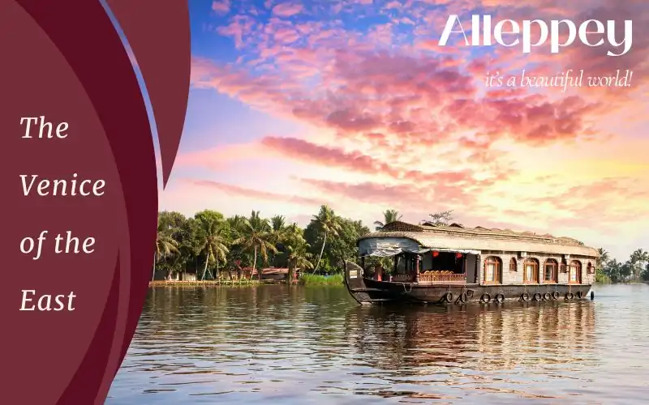
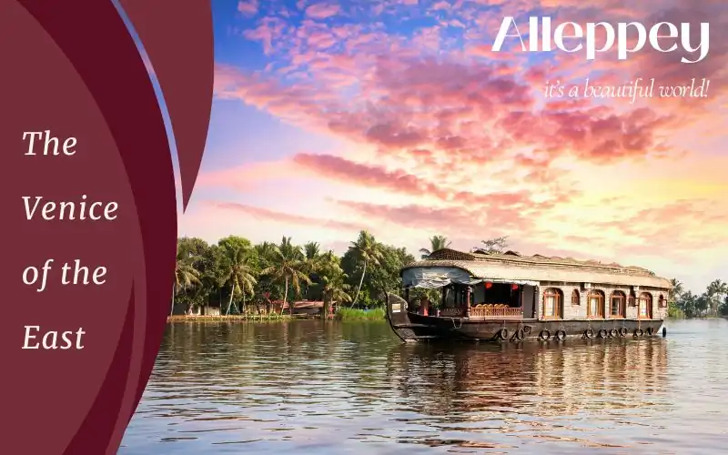
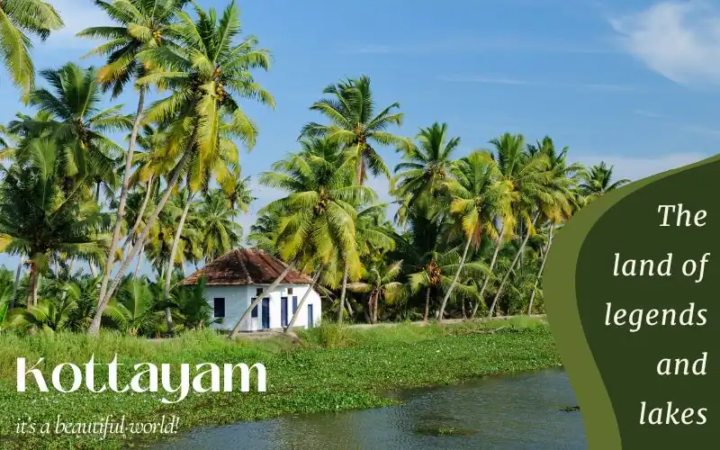
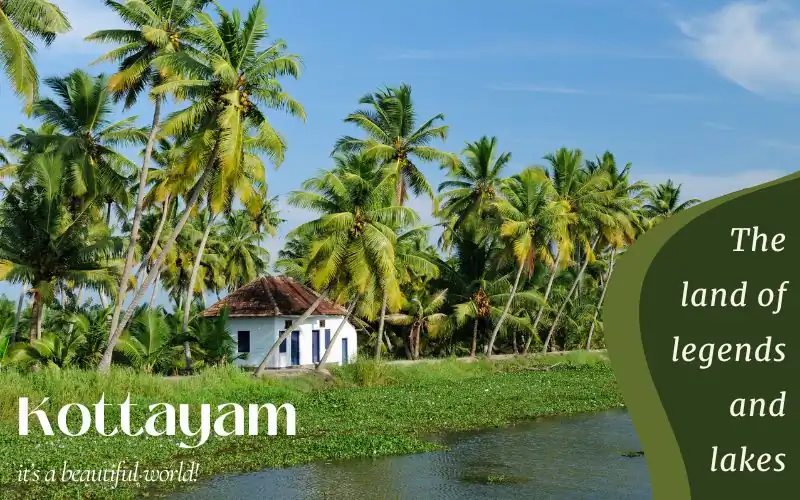

Beat the Heat: India's Top 12 Summer Destinations


Blog
Traditional Flavours of Kanyakumari
Kanyakumari, where the land meets the sea, boasts a a delightful fusion of flavours, featuring staple ingredients lik...
Read MoreIndia's last land, Kanyakumari has a history rooted in mythology and culture and becomes a sanctuary to seekers of serenity in the conflux of three seas with an abundance of green.
A town that is surrounded by blues and greens, Kanyakumari enjoys its status as the southernmost point of the contiguous Indian Subcontinent. It exudes an aura of piety with hundreds flocking to it to pay homage in its many temples that display a fusion of different architectural styles. The distinct hues of blue stand out in the convergence of the Bay of Bengal, Laccadive Sea and Arabian Sea at the Triveni Sangam where the cool winds and incredible view of the sunrise and sunset will compel you to stand in awe. The auspicious Bhagavathy Amman Temple and Vivekananda Rock Memorial provide the backdrop to the deep devotion of this little town.
Must VisitWhen in Kanyakumari, experience the lovely sunset and sunrise at Triveni Sangam on the Kanyakumari beach; you can even bathe there, buy seashell items and try the local cuisine. Take a ferry to the Vivekananda Rock Memorial and admire the Thiruvalluvar Statue. Visit the Bhagavathy Amman Temple, Vattakottai Fort and Courtallam Falls to spend an enjoyable day.
Best time to visitKanyakumari is palatable throughout the year. The cool winds at the seaside ensure it is so. Though it can still be humid at times, winter, spanning October to March, is picked as the most favourable time to visit to explore a variety of adventure sports and celebrate the Cape Festival.
TriviaDuring the Ramayana War, Hanuman is said to have dropped a portion of Mrita Sanjivani near Kanniyakumari, which formed Marunthuvazh Malai. With its profusion of rare natural medicinal plants in the vicinity, the hill proves it to be true.
InterestThe mystic confluence of three seas, serene beaches, and vibrant sunsets make Kanyakumari the perfect escape for newlyweds to build on their intimacy. The iconic Vivekananda Rock, wellness retreats, and tranquil shores give the opportunity for a quiet exploration.
No setting seems to be as scenic as Kanyakumari’s oceanfront. Added to this, its cultural charm makes it a beautiful wedding venue. You can choose to host the ceremonies at beach resorts like Sparsa Resort and Annai Resorts or with the backdrop of the iconic Thiruvalluvar Statue.


Digha, Purba Medinipur, Kolkata, West Bengal 721428
Digha is a small coastal hamlet, covered by the sands of the shore almost completely. The New Digha beach is one of its attractions, found after a quick stroll through the town. Enjoy the large waves rushing past each other on the water on their way to meet the powdery sands.
Chandpur Sea Beach, Chandapur, West Bengal 721423
While the traditional beach invokes the image of blue waves on ochre sands, Chandpur Beach creates an illustration of the passage of time. It invites all those looking to spend quiet moments amidst the myriad shades of nature.
Digha, Purba Medinipur, Kolkata, West Bengal 721428
Digha is a small coastal hamlet, covered by the sands of the shore almost completely. The New Digha beach is one of its attractions, found after a quick stroll through the town. Enjoy the large waves rushing past each other on the water on their way to meet the powdery sands.
Chandpur Sea Beach, Chandapur, West Bengal 721423
While the traditional beach invokes the image of blue waves on ochre sands, Chandpur Beach creates an illustration of the passage of time. It invites all those looking to spend quiet moments amidst the myriad shades of nature.
Digha, Purba Medinipur, Kolkata, West Bengal 721428
Digha is a small coastal hamlet, covered by the sands of the shore almost completely. The New Digha beach is one of its attractions, found after a quick stroll through the town. Enjoy the large waves rushing past each other on the water on their way to meet the powdery sands.
Chandpur Sea Beach, Chandapur, West Bengal 721423
While the traditional beach invokes the image of blue waves on ochre sands, Chandpur Beach creates an illustration of the passage of time. It invites all those looking to spend quiet moments amidst the myriad shades of nature.
Digha, Purba Medinipur, Kolkata, West Bengal 721428
Digha is a small coastal hamlet, covered by the sands of the shore almost completely. The New Digha beach is one of its attractions, found after a quick stroll through the town. Enjoy the large waves rushing past each other on the water on their way to meet the powdery sands.
Chandpur Sea Beach, Chandapur, West Bengal 721423
While the traditional beach invokes the image of blue waves on ochre sands, Chandpur Beach creates an illustration of the passage of time. It invites all those looking to spend quiet moments amidst the myriad shades of nature.
Digha, Purba Medinipur, Kolkata, West Bengal 721428
Digha is a small coastal hamlet, covered by the sands of the shore almost completely. The New Digha beach is one of its attractions, found after a quick stroll through the town. Enjoy the large waves rushing past each other on the water on their way to meet the powdery sands.
Chandpur Sea Beach, Chandapur, West Bengal 721423
While the traditional beach invokes the image of blue waves on ochre sands, Chandpur Beach creates an illustration of the passage of time. It invites all those looking to spend quiet moments amidst the myriad shades of nature.
Digha, Purba Medinipur, Kolkata, West Bengal 721428
Digha is a small coastal hamlet, covered by the sands of the shore almost completely. The New Digha beach is one of its attractions, found after a quick stroll through the town. Enjoy the large waves rushing past each other on the water on their way to meet the powdery sands.
Chandpur Sea Beach, Chandapur, West Bengal 721423
While the traditional beach invokes the image of blue waves on ochre sands, Chandpur Beach creates an illustration of the passage of time. It invites all those looking to spend quiet moments amidst the myriad shades of nature.
Digha, Purba Medinipur, Kolkata, West Bengal 721428
Digha is a small coastal hamlet, covered by the sands of the shore almost completely. The New Digha beach is one of its attractions, found after a quick stroll through the town. Enjoy the large waves rushing past each other on the water on their way to meet the powdery sands.
Chandpur Sea Beach, Chandapur, West Bengal 721423
While the traditional beach invokes the image of blue waves on ochre sands, Chandpur Beach creates an illustration of the passage of time. It invites all those looking to spend quiet moments amidst the myriad shades of nature.
Kanniyakumari, Tamil Nadu 629702
The confluence of three rivers is referred to as the "Triveni Sangam", a sacred place for followers of Hinduism. Bathing in these waters is considered to purify one's soul and spiritually uplift the person. Commonly, it is known as the site to wash away sins.
Kanyakumari, Tamil Nadu
Devoted to the well-known Hindu scholar and monk Swami Vivekananda, the memorial was constructed in the middle of the 20th century to honour Swami Vivekananda's visit to the southernmost point of the Indian subcontinent. The memorial's building is a homage to his spiritual achievements
Kanyakumari, Tamil Nadu
Devoted to Thiruvalluvar, the statue is of the classical Tamil poet and philosopher best known for "Thirukkural". One of the most visited sights in Kanyakumari, the statue is located close to the Vivekananda Rock Memorial. The design of the statue is a reflection of Thiruvalluvar's traditional dress. The statue's other hand is lifted in blessing as it carries a copy of the "Thirukkural" in one hand.
Temple Rd, Kanniyakumari, Tamil Nadu 629702
The title "Bhagavathy Amman Temple" is frequently used for temples honouring the goddess Bhagavathy, a form of the Divine Mother or Devi. Devotees congregate at these temples, sites of devotion, to make prayers and ask the goddess for blessings. Renowned as the Kanyakumari Temple, it is a popular pilgrimage site of cultural legacy.
4HG8+4CG, 1|60 Vattakottai, Vattakkottai, Tamil Nadu 629401
Vattakottai Fort is renowned for its strategic location and architectural significance. With 8 m high walls and multiple watchtowers and rooms, this 18th century granite fort demonstrates a fusion of European and indigenous Keralan architectural forms. With lovely views of the surrounding landscape and the sea, Vattakottai Fort is a popular picnic spot.
Church Rd, Kanniyakumari, Tamil Nadu 629702
Our Lady of Ransom Church, in the coastal town of Kanyakumari, is home to the Catholic Church. Its worship space retains a calm, contemplative atmosphere. Peace and the chance to observe the rich spiritual and cultural legacy of the local Christian community can be found when visiting the church.
Spring is a blend of the cool and the warm and therefore presents a pleasant weather to enjoy the beaches and all its shenanigans. There’s greenery all around to complement the blue waters and the flowers are in bloom.
Summers can get quite hot and humid with the temperature going up to 35 °C. While mid-April to May can become too hot to travel around, early summer in March is a pleasant time to travel with winter giving way to the soft warmth of the sun.
Monsoon is not the easiest time to get around Kanyakumari due to the frequent downpour but the visit is worth it. The temperature is brought down though the humidity remains high. This results in cloudy skies against the vastness of the sea which in itself is a spectacular sight to witness.
Autumn feels the impact of the heavy monsoons and the oncoming chilly winds of winter positing the perfect weather to revel in the beachfront and relish the water sports while also going around discovering all the nearby attractions.
Winter is when you can do anything you like without any restrictions. The skies are clear but the beach side and the popular places of interest are not because the weather is too pleasant to not visit this town. The sun isn't harsh, the humidity is lower than usual and the cool winds let you explore for hours on end without the slightest hints of fatigue.
The nearest functional airport is the Trivandrum International Airport, located at a distance of 89.6 km from Kanyakumari. It is connected to most of the major cities of the subcontinent including the Metropolitan states. It also has the provision of being connected to several international destinations such as Doha, Kuwait, Kuala Lumpur, Singapore, etc. You can embark on a smooth hassle-free ride to the blue town of Kanyakumari and reach in two and a half hours via the Panvel - Kochi - Kanyakumari Highway and NH 66 on a taxi or a bus.
The Kanyakumari Railway Station which is a part of the Southern railway zone serves this little town and connects it to the major cities of the country. One of the longest rail lines begin at Jammu with Kanyakumari as its final stop. Kanyakumari Express and Himsagar Express are some of the common trains that travel here.
Tourists from nearby cities prefer driving down to Kanyakumari or taking a bus because the journey itself is scenic. Buses from the north are quite rare due to the long distance but very frequent from the closer cities and towns. Both the Kerela State Road Transport Corporation and State Express Transport Corporation operated by the governments of Kerela and Tamil Nadu respectively, ensure that the town is well connected to most cities
The SETC of Tamil Nadu ensures travelling around the town is cheap and convenient. Some interstate buses that ply through the town also stop at various important sightseeing locations of the city. Auto rickshaws are the most popular mode of transport here. To see the Vivekananda Rock Memorial and Thiruvalluvar Statue up close you can take the ferry which is provided by the state-owned Poompuhar Shipping Corporation.
Being in the southern part of India, Kanyakumari is most easily accessible from the southern states, and its major cities.
Kanyakumari is popular for its beautiful beaches, unique Vivekananda Rock Memorial, and stunning sunrise and sunset views. It is also a major pilgrimage centre for Hindus.
The best places to stay In Kanyakumari are Annai Resorts and Spa, Hotel Sangam, and Sunshine Villas.
The best places to eat in Kanyakumari are Zam Zam Restaurant, The Ocean Restaurant, and The Curry.
The top sights in Kanyakumari are Vivekananda Rock Memorial, Thiruvalluvar Statue, and Kanyakumari Bhagavathy Amman Temple.
Kanyakumari, where the land meets the sea, boasts a a delightful fusion of flavours, featuring staple ingredients lik...
Read More


 

 
